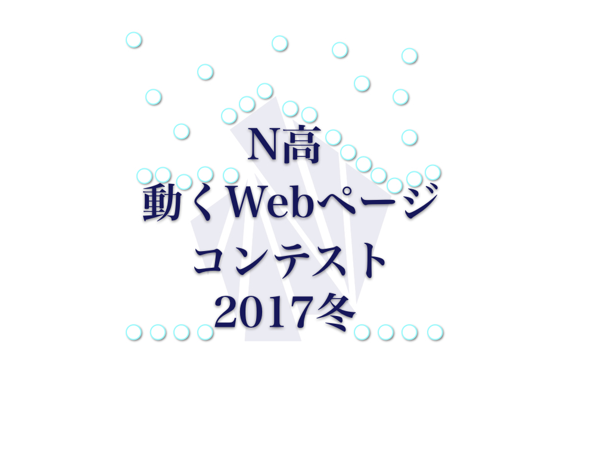

「N高・N予備校 Webアプリコンテスト 2017冬」は、N予備校プログラミング入門コースで学んだN高校生ならびにN予備校受講者が、 Node.js の技術を使ってプログラミングの成果物を競うコンテストです。
今回はプログラミング経験が一年未満の方と、一年以上の方に分けて開催いたします。
参加資格
- N予備校 または N高課外授業 にて プログラミングのいずれかのコースを受講中であること
プログラミング経験が一年未満の方
応募規定
- Node.js および JavaScript を主として使用した作品を提出すること（他のプログラミング言語から変換したものは不可）
- テーマは「動物」であり、そのテーマに沿っていること
- 著作権上問題のないメディアファイル、ソースコードのみで構成されていること
- 提出はプロジェクトフォルダを zip圧縮したファイルを提出し、全体のサイズが100MB以内となること
- 良い作品は公開される可能性があるため、それに了承できること
賞
- N高最優秀賞
- 賞品:PFU Happy Hacking Keyboard の Professional 2 または Professional JP 、または、REALFORCE シリーズのいずれか
- N高優秀賞
- N高健闘賞
- N予備校最優秀賞
作品例
プログラミング経験が一年以上の方
テーマは「オープンデータの活用」
応募規定
- 任意のプログラミング言語を使用した作品を提出すること (プログラミング言語をまったく利用しないものは不可)
- テーマである「オープンデータの活用」に沿っていること
- 著作権上問題のないメディアファイル、データ、ソースコードのみで構成されていること
- 提出はプロジェクトフォルダを zip圧縮したファイルを提出し、全体のサイズが100MB以内となること
- 良い作品は公開される可能性があるため、それに了承できること
賞
- 最優秀賞
- Google Home Mini（色：チョーク or チャコール or コーラル から１つ選択）
- 優秀賞
- 賞状 ＋ N予備校記念品 + ニコ生で紹介される。
- 健闘賞
作品例
- 天気情報
- 電車情報
- データーまとめサイト or API
応募期間
- 2017年12月14日の授業内で投稿フォームのURLを公開
- 2017年12月14日から2018年1月27日の間、応募フォームより応募可能
応募形式
授業内で公開されたGoogleフォームのURLより、投稿作品がまとめられた zipファイルのGoogleドライブの「共有リンク」「作品名」「作品の説明」「プログラミングを始めた時期」を記入し投稿する。締め切り日までは編集可能。
結果発表
2018年2月12日の授業と本サイトにて発表
評価項目
- コーディング技術 (40点)
- 完成度 (30点)
- アイデア (30点)
- 創意工夫や発想、テーマにあっているか、着眼点の良さを評価します
審査員
- ドワンゴエンジニア koizuka さん
- ドワンゴエンジニア meso さん
- プログラミング講師陣
Googleドライブの共有リンクの取得方法
https://www.google.com/intl/ja_jp/drive/ から 「Google ドライブにアクセス」ボタンをクリックします。 ドライブにはドラッグ＆ドロップでzipファイルを保存することができます。
ドライブにはドラッグ＆ドロップでzipファイルを保存することができます。
その後、そのファイルを右クリックして、メニューから「共有」をクリックします。 そこから共有可能なリンクを取得とかかればテキストの右側のボタンをクリックすることで、共有リンクを取得することができます。
そこから共有可能なリンクを取得とかかればテキストの右側のボタンをクリックすることで、共有リンクを取得することができます。 この共有リンクのURLを応募フォームに入力ください。
この共有リンクのURLを応募フォームに入力ください。
応募フォーム
https://docs.google.com/forms/d/e/1FAIpQLScN8Myn95n809SFUX1zggIemblHETfj_1_QLrfJYRTst4MYDQ/viewform